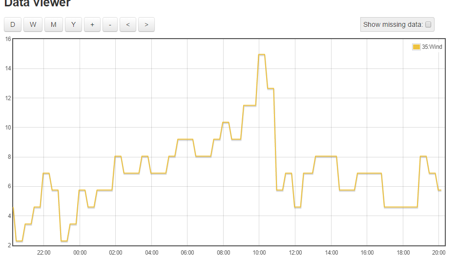
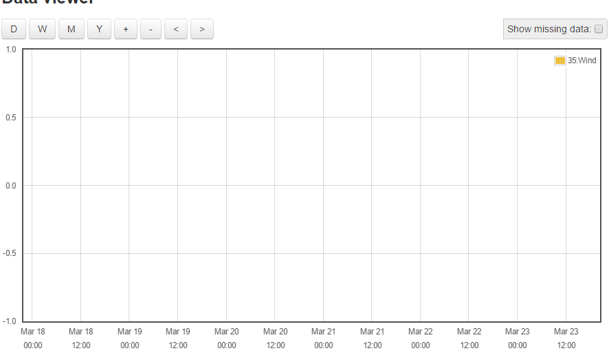

Just trying the new 'Graph' Data Viewer, which works great with most of my feeds, however strangely it doesn't seem to work well with feeds that originate from a MQTT input.
Firstly, none of the MQTT origin feeds appear in the left sidebar of the Data Viewer, only the feeds originating from emonTX's and emonTH's. So this results in for example, not being able to compare Power usage (emonTX) with Outdoor Temperature (MQTT). - (Or does it only display the first 16 feeds?)
If I select the 'Outdoor Temperature' 'eye' icon from the feeds page, the Data Viewer opens for that feed, but the data does not display correctly;
The data is displayed OK when selecting the current DAY -

But then when zooming out, or selecting week, the data disappears (the data shown above is Mar 22/23)

Paul
Re: New 'Graph' Data Viewer - SORTED
Hello Paul, there shouldnt be anything in the graph module per se, that would distinguish between feeds created from one or another source, my first thought when you mentioned that they don't appear in the left sidebar is that it could be naming related. Do you see any errors in the console window?
Re: New 'Graph' Data Viewer - SORTED
Trystan has kindly pointed out the issue about the feed data not displaying correctly was due to poor feed quality. This was caused by the post interval being less frequent than the underlying feed file interval of phpfina.
This is evident when looking at the 'CSV Output' from the 'Graph' data viewer;
1458767280, 5.5
1458767400, null
1458767520, null
1458767640, null
1458767760, null
1458767880, 5.3
1458768000, null
1458768120, null
1458768240, null
1458768360, null
1458768480, 4.9
As can be seen, I get a post update every 600 seconds, yet I had set the emoncms feed to update every 60 seconds (doh!), so emoncms filled all of the gaps with 'null' which prevented the graph from displaying correctly due to the request to build the graph was asking for data points out of sync with the position of the valid datapoints in the file.
This originated because I decreased the API call rate to a weather station to get less regular updates, to capture wind speed & gusts which is fed to emoncms via MQTT.
Unfortunately, it's not possible (at this time) to change the feed update interval, so the only solution was to delete the feed (and a few others too..) and make another feed with an update interval of 600 seconds.
I've just rechecked the feed quality again in the 'Graph' data viewer, and now it is showing 100%, instead of the 20% reported with the old feed, and the graph displays perfectly.
There is however still an issue with the Graph data viewer which results in not all the feeds being displayed in the left hand sidebar, and I'll post that issue a little later.
Paul
Re: New 'Graph' Data Viewer - SORTED
There is currently an issue with the left hand sidebar which holds the feeds list, in that if you have a large list of feeds, or are not using high resolution graphics, then the feeds list is cut short, and you cannot scroll down to the bottom of the feed list.
An example is the screenshot below, which was taken from a laptop at video resolution of 1366 x 768, and with 29 feeds. The last feed in the feed list is called 'emonTH Humidity', but as you can see, the last feed displayed in the Graph module is 'Outdoor Temp Fahrenheit' , which is only the 19th feed in the list - and I can't scroll any further down to get access to feeds 20 - 29.
EDIT - Fix submitted for consideration
Re: New 'Graph' Data Viewer - SORTED
Fix now merged, and all working OK
Paul